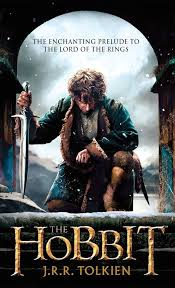

The Hobbit: An Unexpected Adventure
Published on by Bilbo Baggins
Once upon a time in the cozy Shire, there lived a hobbit named Bilbo Baggins. Little did he know, his quiet life was about to take an unexpected turn...
It all started when the wise wizard Gandalf and a band of thirteen dwarves led by Thorin Oakenshield arrived at Bilbo's hobbit hole. They sought his help on a daring quest to reclaim the lost Dwarf Kingdom of Erebor from the fearsome dragon Smaug.
Reluctantly, Bilbo joined the company on their journey across Middle-earth. Along the way, they faced trolls, goblins, elves, and even encountered Gollum and his precious ring in the dark depths of the Misty Mountains.
Through it all, Bilbo discovered courage and resourcefulness he never knew he had. He proved instrumental in their quest, using his wit to outsmart foes and find unexpected allies.
After many trials and tribulations, they reached the Lonely Mountain, where Bilbo had a fateful encounter with Smaug. The hobbit's cleverness once again played a key role in the dragon's downfall.
Ultimately, Bilbo returned home to the Shire, forever changed by his adventures. He penned down his remarkable tale in a book titled "There and Back Again," recounting the extraordinary events of his unexpected journey.